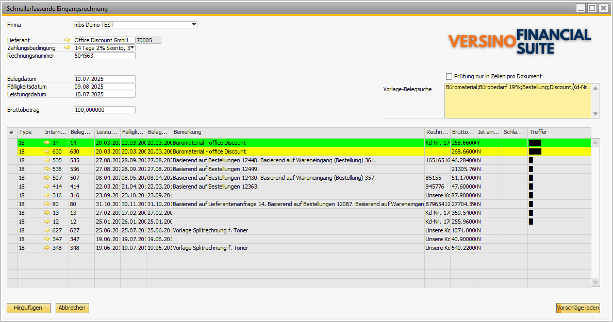

Schnellerfassung-Eingangsrechnung (Fast Entry)
Überblick
Das Versino Fast Entry Modul ist ein spezialisiertes Werkzeug für die schnelle Erfassung von Eingangsrechnungen in SAP Business One. Es ist ideal für Unternehmen, die regelmäßig ähnliche Rechnungen von denselben Lieferanten erhalten. Anwender können auf Basis bereits existierender Einkaufsbelege (Eingangsrechnungen, Wareneingänge, Bestellungen) mit wenigen Klicks neue Rechnungen erstellen.
Zugang zum Modul: Sie finden die Schnelleingabe im Menü unter:
- Einkauf > Schnellerfassende Eingangsrechnung
- Versino Financial Suite > Schnelle Eingangsrechnung
Bei der ersten Nutzung des Moduls werden automatisch zwei benutzerdefinierte Felder in den Eingangsrechnungen angelegt, die für das Favoriten-Management benötigt werden.
Hauptfunktionen
Schnelle Beleg-Erfassung & Betragsverteilung
Die Kernfunktion ist die Erstellung neuer Rechnungsentwürfe durch Kopieren von Daten aus einem vorhandenen Beleg. Weicht der neue Rechnungsbetrag vom Originalbeleg ab, verteilt das System den neuen Betrag proportional auf alle Zeilen.
Intelligente Suchfunktionen
Eine Volltext-Suche hilft, schnell den richtigen Basis-Beleg zu finden. Sie können zwischen einer Beleg-Suche und einer Zeilen-Suche umschalten:
Beleg-Suche durchsucht
- Belegkommentare
- Favoriten-Beschreibungen
- Externe Belegnummern
- Belegnummern
- Beleg-IDs
Zeilen-Suche durchsucht
- Artikel-Codes
- Artikel-Beschreibungen
Suchsyntax: Trennen Sie mehrere Begriffe mit Semikolon, z. B. Büromaterial;Papier;Toner — Wildcards werden automatisch verwendet, Groß-/Kleinschreibung wird ignoriert.
Farbliche Hervorhebung der Suchergebnisse
Die Ergebnisse werden nach Relevanz farblich hervorgehoben:
- Grün: Als Favorit markierte Belege (immer ganz oben sortiert)
- Cyan: Hohe Relevanz (mehr als 50 % der Suchbegriffe gefunden)
- Gelb: Standard-Belege ohne Suchbegriffe
- Weiß: Normale Relevanz
Favoriten-Management
Häufig genutzte Belege können direkt in der Eingangsrechnung als Favorit markiert werden. Diese erscheinen in den Suchergebnissen immer ganz oben (grün), was die Auswahl von Vorlagen enorm beschleunigt. Beim ersten Modul-Start werden automatisch zwei UDF-Felder angelegt:
- Beleg als Favorit hinterlegt (Ja/Nein-Auswahl)
- Favoriten Bemerkung (Textfeld für Beschreibungen)
Multi-Datenbank-Unterstützung
Das Modul kann auf mehrere SAP Business One Datenbanken zugreifen, um einen Beleg aus einer Datenbank als Vorlage für eine neue Rechnung in einer anderen Datenbank zu verwenden.
- Heim-Datenbank: Vollständige Funktionalität mit Links zu Original-Belegen und automatischem Öffnen erstellter Drafts.
- Fremd-Datenbanken: Beleg-Erstellung als Draft, mit Hinweis-Meldungen statt automatisches Öffnen. Link-Schaltflächen sind ausgeblendet.
Berechnungsbeispiel: Proportionale Betragsverteilung
Verteilung bei abweichendem Rechnungsbetrag
Original-Beleg: 1.000 EUR mit 3 Zeilen (400 / 300 / 300 EUR brutto)
Neue Rechnung: 1.200 EUR
Proportionsfaktor: 1,2
Neue Verteilung: 480 / 360 / 360 EUR brutto
Steuersätze pro Zeile werden berücksichtigt, Rundungsdifferenzen automatisch behandelt.
Zahlungsbedingungen-Berechnung
Das Fälligkeitsdatum wird automatisch basierend auf den Zahlungsbedingungen des Lieferanten berechnet. Folgende Modi werden unterstützt:
- Normal: Rechnungsdatum + X Tage
- Monatsbeginn: Zum 1. des Monats + Zusatztage/-monate
- Monatsmitte: Zum 15. oder Monatsende + Zusatztage/-monate
- Monatsende: Zum Monatsende + Zusatztage/-monate
Integration mit anderen VPS-Modulen
VPS Buchungstext-Konfigurator (JeTextSetter)
Nutzt automatisch generierte Buchungstexte aus dem JeTextSetter, sodass die mit Fast Entry erstellten Rechnungen einheitliche, aussagekräftige Texte erhalten.
VPS DATEV Export
Die per Fast Entry erstellten Eingangsrechnungen werden vom DATEV Export wie reguläre Rechnungen behandelt und korrekt klassifiziert.
Anwendung
- Navigieren Sie zu Einkauf > Schnellerfassende Eingangsrechnung.
- Wählen Sie den Lieferanten aus. Die Zahlungsbedingungen und das Datum werden automatisch gefüllt.
- Geben Sie die Lieferanten-Rechnungsnummer und den Bruttobetrag der neuen Rechnung ein.
- Nutzen Sie das Suchfeld, um nach einer passenden Vorlage zu suchen (z. B. nach einem Artikel oder Projekt). Favoriten werden automatisch priorisiert.
- Wählen Sie in der Ergebnisliste den passenden Beleg aus.
- Klicken Sie auf "Hinzufügen". Das System erstellt einen neuen Rechnungsentwurf mit den übernommenen Daten und dem neuen, proportional verteilten Betrag.

Tipps und Fehlerbehandlung
Tipps für die tägliche Arbeit
- Favoriten nutzen: Markieren Sie wiederkehrende Rechnungen (z. B. Miete, Leasing) als Favoriten, um diese sofort zu finden.
- Effizient suchen: Verwenden Sie spezifische Suchbegriffe und trennen Sie mehrere Begriffe mit einem Semikolon (;). Wechseln Sie zwischen Beleg- und Zeilen-Suche je nach Bedarf.
- Multi-DB-Effizienz: Nutzen Sie die zentrale Beleg-Suche über mehrere Mandanten. Beachten Sie: Heim-Datenbank bietet vollständige Funktionalität, Fremd-Datenbanken erstellen Belege nur als Draft.
- Betragsverteilung kontrollieren: Prüfen Sie die berechneten Fälligkeitsdaten und die proportionale Verteilung bei abweichenden Summen vor der Beleg-Erstellung.
Häufige Probleme und Lösungen
Problem: Ein Lieferant wird nicht gefunden.
Lösung: Überprüfen Sie die Schreibweise. Die Suche funktioniert sowohl mit dem Lieferantencode als auch mit dem Namen.
Problem: Keine Suchergebnisse angezeigt.
Lösung: Erweitern Sie die Suchbegriffe oder wechseln Sie den Suchtyp (Beleg-Suche vs. Zeilen-Suche).
Problem: Favoriten-Felder sind nicht sichtbar.
Lösung: Starten Sie Fast Entry einmal — die UDF-Felder "Beleg als Favorit hinterlegt" und "Favoriten Bemerkung" werden beim ersten Start automatisch erstellt.
Problem: Multi-Datenbank-Login schlägt fehl.
Lösung: Überprüfen Sie Benutzername und Passwort für die Ziel-Datenbank. Beachten Sie, dass Passwörter aus Sicherheitsgründen nicht gespeichert werden.
Problem: Das Fälligkeitsdatum ist falsch.
Lösung: Das Datum wird automatisch auf Basis der beim Lieferanten hinterlegten Zahlungsbedingungen berechnet. Prüfen und korrigieren Sie diese ggf. in den Geschäftspartner-Stammdaten.
Problem: Die proportionale Verteilung scheint nicht zu stimmen.
Lösung: Kontrollieren Sie den eingegebenen Brutto-Betrag. Die Verteilung erfolgt auf Basis der Zeilenanteile des Originalbelegs. Eine eventuelle Rundungsdifferenz wird automatisch auf die erste Zeile gebucht.
Problem: Beleg-Erstellung gibt einen Fehler aus.
Lösung: Prüfen Sie Lieferanten-Rechnungsnummer und Rechnungsbetrag. Stellen Sie sicher, dass die Buchungsperiode geöffnet ist und Sie die nötigen Berechtigungen besitzen.